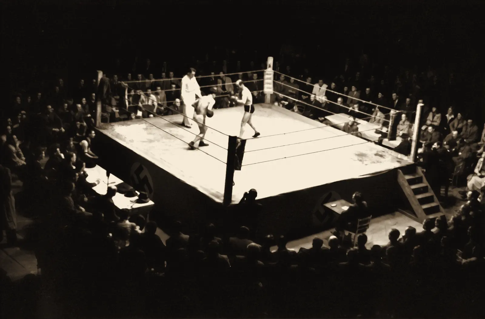
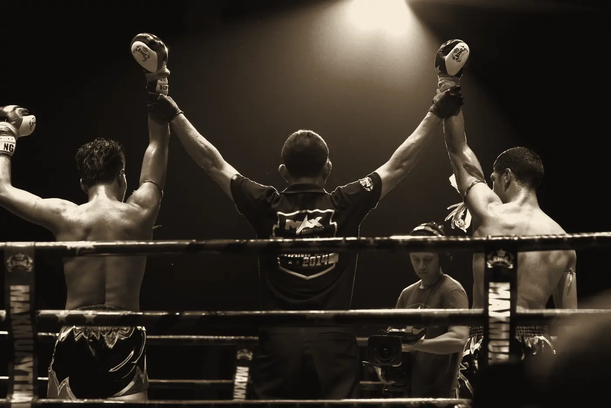

Martial Marketing Methods
Meer leden, op maat
Geen wilde slagen
Wij vechten niet blind
Bij de meeste gyms is marketing een gok: een leuk idee proberen en duimen dat het werkt. TitleShot vecht niet blind: wij hebben methodes die je concurrentie knock-out slaan en van jouw school de undisputed champion van je regio maken.
Vervang giswerk door strategieën die echt resultaat opleveren. Van digitale marketing tot oldskool guerrilla marketing: geen wilde slagen, maar gerichte combinaties die aankomen. Geen standaardpakket, maar maatwerk dat past bij jouw school, jouw stad en jouw doelgroep.
Elke euro moet terugkomen als nieuw lid, en dat meten we. Zo word je niet alleen gevonden, maar gekozen.
Wat het oplevert
- Meer betalende leden
- Oud-leden die terugkomen
- Meer uit je huidige leden
- Leads van het soort dat jij wilt
02 · Betaalde advertenties
Ads to Athletes Arsenaal
Vanaf €197per maand, advertentiebudget apart

Je kunt de beste trainingen van de stad geven, maar als niemand je ziet, train je voor een lege zaal.
Ads to Athletes Arsenaal zet jouw school vol in de spotlight, bij precies de mensen die jij in je gym wilt zien. Reken af met budget dat verdwijnt in een bodemloze put. Wij zetten campagnes neer die meetbaar resulteren in nieuwe leden. Van Instagram en Google ads tot TikTok en ChatGPT: wij maken van jouw gym het main event van de stad.
Vier kanalen
Facebook & Instagram ads
Hier zit je grootste publiek, ook de mensen die nog niet actief op zoek zijn. Met de juiste boodschap per doelgroep zet je sluimerende interesse om in een geboekte proefles: ouders voor de kidsles, volwassenen die iets nieuws willen, en wie al jaren van plan is om te beginnen.
Waarom het werkt
- Mond-tot-mond is waardevol, maar niet te plannen. Met ads bepaal jij wanneer er nieuwe aanmeldingen bijkomen, ook in rustige maanden.
- Je bereikt alleen mensen in jouw regio die bij je school passen. Geen budget aan de verkeerde mensen.
Wat er inbegrepen is
- Een boodschap en strategie per doelgroep: ouders, volwassenen en elke discipline krijgen een eigen advertentie. Elke euro landt bij de juiste persoon.
- Bewezen campagnes: we starten met aanbiedingen die in de vechtsport al werken, zoals een gratis proefles of beginnersworkshop. Geen gokwerk met je budget.
- Advertenties, teksten en video: wij maken alles, jij hoeft niets aan te leveren.
- Landingspagina per campagne: één pagina, één actie. Meer klikken worden geboekte proeflessen.
- Retargeting: wie twijfelt, ziet je terug en boekt alsnog. Je haalt meer uit hetzelfde budget.
- Elke aanvraag direct opgevolgd: geen lead die wegzakt terwijl jij lesgeeft.
- Wekelijks bijsturen: je budget gaat naar wat aanmeldingen oplevert. Zo dalen je kosten per nieuw lid.
- Rapport in proeflessen en nieuwe leden: je weet precies wat een nieuw lid je kost en wat het oplevert.
Google Ads
Elke dag zoeken mensen in jouw stad naar een school zoals de jouwe. Ze kiezen bijna altijd uit de bovenste resultaten. Dit zijn de warmste aanvragen die er zijn, en ze gaan nu naar je concurrent.
Waarom het werkt
- Iemand die zoekt op "kickboksen" plus jouw stad is al klaar om te starten. Dit zijn de warmste aanvragen die je kunt krijgen.
- Je betaalt alleen als iemand klikt.
Wat er inbegrepen is
- Zoekwoorden per stad en discipline: je verschijnt bij de zoektermen die aanmeldingen opleveren, niet bij zoekopdrachten die niets brengen.
- Zichtbaar in zoekresultaten en Google Maps: je staat op beide plekken waar mensen een school in de buurt zoeken.
- Landingspagina per zoekterm: wie zoekt op kickboksen voor kinderen, landt op een pagina over precies dat. Zo boeken mensen sneller.
- Retargeting via Google: bezoekers die nog twijfelen, blijven je zien tot ze boeken.
- Wekelijks optimaliseren: je kosten per aanvraag dalen naarmate de campagne loopt.
- Rapport in proeflessen en nieuwe leden: je ziet precies wat Google je oplevert.
TikTok ads
Hier bepaalt de video of mensen blijven kijken, niet je budget. Eén sterke video van jouw school bereikt duizenden mensen in je regio, van tieners tot ouders van veertig. Wij zorgen voor content die blijft hangen en aanzet tot actie.
Waarom het werkt
- Tieners en jonge volwassenen zitten op TikTok, niet op Facebook.
- Echte video’s van training en sfeer overtuigen deze doelgroep beter dan elke folder.
Wat er inbegrepen is
- Video-advertenties met beelden van je eigen school: echt en herkenbaar, geen stockmateriaal.
- Een boodschap en strategie per doelgroep: gericht op leeftijd, discipline en je eigen regio.
- Landingspagina en directe opvolging: interesse wordt meteen een geboekte proefles.
- Wekelijks bijsturen en rapport: je ziet wat TikTok je oplevert aan aanvragen en leden.
ChatGPT ads
Steeds meer mensen zoeken niet meer op Google, maar vragen ChatGPT waar ze kunnen beginnen met vechtsport. Bijna geen gym is daarop voorbereid, en dat maakt dit het grootste open veld in sportmarketing. Wie hier nu staat, pakt de aanvragen voordat de rest wakker is.
Waarom het werkt
- Wie het vraagt, wil nu beginnen. Je bereikt mensen op het moment dat ze een keuze maken.
- Nieuw kanaal met nog weinig concurrentie: jij staat er vóór de andere gyms in je stad.
Wat er inbegrepen is
- Campagne op de vragen van jouw doelgroep: zichtbaar bij vragen over vechtsport, zelfverdediging en sporten in jouw stad.
- Teksten die overtuigen: een advertentie die direct antwoord geeft op wat de zoeker wil weten.
- Landingspagina en directe opvolging: interesse wordt meteen een geboekte proefles.
- Wekelijks bijsturen en rapport: je ziet wat ChatGPT je oplevert aan aanvragen en leden.
03 · E-mail marketing
Inbox to Mat Method
Vanaf €397per traject

Een gevecht win je zelden met de eerste stoot. Een nieuw lid ook niet.
Inbox to Mat Method rekent af met aanvragen die stilvallen na het eerste contact. Wij bouwen e-mailcampagnes die wél geopend worden. Van een persoonlijk welkom voor nieuwe aanvragen tot een comeback voor verloren leden. Geen stille mailinglijst, maar een loyale community die leden oplevert.
Waarom het werkt
- De meeste mensen boeken niet bij hun eerste aanvraag. Wie goed opvolgt, krijgt de inschrijving.
- E-mail is je eigen kanaal. Je bent niet afhankelijk van algoritmes of advertentiekosten.
Wat er inbegrepen is
- Opvolging van nieuwe aanvragen: twijfelaars blijven warm tot ze hun proefles boeken, zonder dat jij erachteraan hoeft.
- Opvolging na de proefles: meer proeflessers worden betalende leden.
- Seizoenscampagnes: januari, zomer en back-to-school: je benut de momenten waarop mensen willen beginnen.
- Nieuwsbrieven en acties voor leden: leden voelen zich betrokken, blijven langer en kopen vaker iets extra.
- In jouw tone of voice: elke mail klinkt als jouw school, niet als een bureau.
- Inzicht in resultaat: je ziet welke mails aanmeldingen opleveren.
04 · 3D mail marketing
Mailbox Main Event
Vanaf €297per campagne

Elke kampioen verdient een opkomst die niemand vergeet.
Online vecht iedereen om dezelfde aandacht. Dezelfde posts, dezelfde advertenties, dezelfde boodschap. Mailbox Main Event rekent af met die ruis. Geen bereik om het bereik, maar één indruk waar je toekomstige lid niet omheen kan. Zo wordt jouw school niet alleen gezien, maar onthouden.
Waarom het werkt
- De brievenbus is bijna leeg. Online concurreer je met honderden advertenties, in de bus ben je de enige.
- Een pakketje wordt altijd geopend. Nieuwsgierigheid wint het van een folder die direct bij het oud papier gaat.
- Het blijft liggen en wordt doorgegeven. Mensen laten het zien aan hun partner, buren of collega’s. Dat is gratis extra bereik.
- Het voelt persoonlijk. Je spreekt één persoon aan, niet de massa, en zo reageren mensen ook.
- Het laat direct zien dat je school anders is dan de rest.
Wat er inbegrepen is
- Doelgroep en verzendlijst: we bepalen samen wie het krijgt: gezinnen in de buurt, oud-leden, bedrijven of scholen. Hoe gerichter de lijst, hoe meer elk pakket oplevert.
- Concept, object en brief: object, tekst en aanbod vertellen samen één verhaal. Het blijft hangen en voelt niet als een gimmick.
- Een sterk aanbod: elke ontvanger krijgt een reden om nu te reageren, zoals een persoonlijke proefles of uitnodiging.
- Productie en verzending: wij regelen alles, van ontwerp tot handgeschreven adres.
- Eigen landingspagina en opvolging: ontvangers komen via een QR-code op een eigen pagina en worden opgevolgd. Meer contactmomenten betekent meer reacties.
- Meetbaar op rendement: je ziet precies hoeveel aanmeldingen en omzet elke campagne oplevert.
05 · Guerrilla marketing en samenwerkingen
Guerrilla Gym Growth
Vanaf €397per actie

Opgaan in de massa is de snelste manier om vergeten te worden.
Guerrilla Gym Growth zet jouw merk in de kijker met acties die niemand verwacht. Onconventionele campagnes en slimme stunts die opvallen en blijven hangen. Verrassend, origineel en onmogelijk te negeren. Online én offline. Hier wint het idee, niet het budget. Eén goed idee gaat verder dan duizend euro bereik.
Waarom het werkt
- Mensen kiezen eerder een school die ze kennen en die ze in hun omgeving tegenkomen.
- Via een partner leen je diens vertrouwen en netwerk. Een aanbeveling werkt beter dan een advertentie.
Wat er inbegrepen is
- Guerrilla-acties: opvallen op plekken waar je doelgroep komt. Je school wordt het gesprek van de buurt.
- Samenwerkingen (joint ventures): met scholen, bedrijven, sportclubs, horeca of een bekende vechter. Je bereikt in één keer hun hele netwerk.
- Workshops, seminars en demo’s: bijvoorbeeld self-defense bij een bedrijf of een seminar met een bekende vechter. Mensen ervaren je school al voordat ze binnenstappen.
- Maatwerk campagnes en funnels: elke actie krijgt een eigen aanbod en pagina. Interesse wordt direct een aanmelding.
- Lokale contentmachine: posters, flyers en drukwerk in je eigen huisstijl. Je merk is overal in de buurt zichtbaar, consistent en professioneel.
- Meetbaar: met QR- en actiecodes zie je welke actie leden oplevert.
06 · Meer uit je ledenbestand
Member Multiplier Method
Vanaf €297per traject

De grootste kans ligt in wat je al in huis hebt.
Oud-leden die stopten. Aanvragen die nooit zijn opgevolgd. Tevreden leden die niemand om een introductie vraagt. Daar laat bijna elke gym geld liggen. Member Multiplier Method haalt het maximale uit je bestaande ledenbestand, zonder ook maar een euro aan advertenties. Groeien begint niet buiten je deur, maar vaak al binnen jouw gym.
Waarom het werkt
- Iemand die je al kent overtuigen is veel goedkoper dan een vreemde.
- Tevreden leden zijn je beste verkopers, als je ze de kans geeft.
Wat er inbegrepen is
- Win-back: oud-leden krijgen een persoonlijke uitnodiging om terug te komen. Omzet die je al kwijt was, komt terug.
- Oude aanvragen heractiveren: mensen die ooit interesse hadden maar nooit startten, krijgen een nieuwe kans. Nieuwe leden uit je eigen lijst, zonder advertentiekosten.
- Referral-programma: leden worden beloond als ze iemand aanbrengen. Mond-tot-mond wordt een vaste bron van nieuwe leden in plaats van toeval.
- Review machine: meer positieve reviews, feedback van leden op tijd opvangen en een hogere tevredenheid onder je leden. Zo kiezen nieuwe sporters eerder voor jou en blijven je leden langer.
Niet zeker waar je moet beginnen?
Martial Marketing Masterplan
Na een gratis consult maken we jouw marketingplan, met de methodes die voor jouw school het meest opleveren en een tijdpad dat bij je past.
Ronde 1
Scan
We zien waar je nu leden laat liggen.
Ronde 2
Plan
De methodes die het meest opleveren.
Ronde 3
Uitvoeren
Wij bouwen, lanceren en beheren.
Ronde 4
Meten
Elke maand aanvragen, proeflessen en nieuwe leden.
The 90-Day Double Your Money Back Guarantee
Binnen 90 dagen verdien je je investering minimaal twee keer terug. Lukt dat niet, dan werken we kosteloos door tot het wel zo is.
Garantie geldt alleen bij een Martial Marketing Masterplan.

The Weigh-In
Hoe scoort jouw school online?
Doe de gratis check en zie je score, je grootste kansen en wat je eraan kunt doen.
01 · Social media
Social Standout System
Vanaf €297per maand
Social media zonder strategie is als in de ring staan zonder gameplan: je verspilt een hoop energie, maar scoort geen punten.
Het Social Standout System rekent af met giswerk. Geen losse posts, maar een gerichte contentstrategie die scrollers omzet in blijvende leden. Jij houdt tijd over voor waar je écht energie uit haalt, wij zorgen voor een social media presence die blijft hangen.
Waarom het werkt
Wat er inbegrepen is